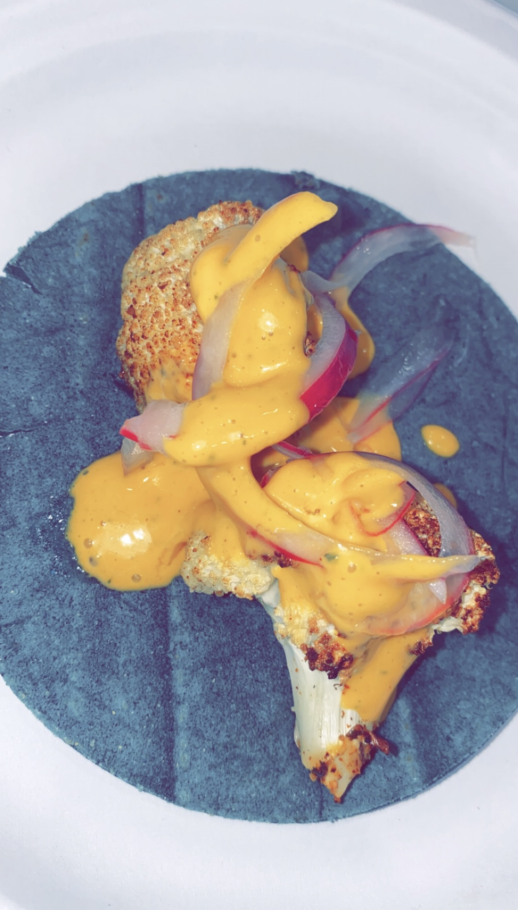

Cauliflower Tacos with Red Pepper Aioli and Pickeled Red Onion
How to Make Cauliflower Tacos
In this recipe we are going to learn how to make cauliflower tacos.
We will learn how to roast the cauliflower, make the roasted red pepper aoli sauce, and
how to pickle red onions if they are not available at your local store.
Ingredients
For the cauliflower
- 2 heads of cauliflower
- Fajita/Taco seasoning or your favorite type of seasoning
- Olive oil or your preferred type of oil
- Pack of tortillas
For the Roasted Red Pepper Aioli
- 2 red peppers (roasted)
- 15 fl oz jar of mayonnaise (light is preferrable)
- 5 cloves of garlic
- Juice of 1 lemon
- 1/3 cup of basil
- 2 tbs of honey
- Salt to taste
For the Pickeled Red Onions
- 1 red onion
- 1 cup white vinegar or apple cider vinegar
- 1 cup water
- 1/4 cup honey or sugar
- 2 tbs salt

Steps:
- First, pre-heat the oven to 425 degrees farenheit. Cut your heads of cauliflower into florets or bite-sized pieces.
Also, cut your red peppers into halfs and remove all the seeds and white membrane.
Place the florets into a bowl with some olive oil and seasoning until they are all decently coated.
Line a baking tray with tinfoil and spread the seasoned florets evenly across the pan.
Place the red peppers face down on the same pan if you have space or line a new tray with tinfoil.
You should have 4 halfs of red pepper. Place both the florets and the peppers into the oven or air fryer for 30-45 minutes.
The peppers should become bruised and the florets should be brown and crispy.
-
Next, we can prepare the pickeled red onions. Cut the red onion into long thing slices, using a mandolin would be best.
After the onion is cut, place the pieces along with the rest of the ingrediants in a jar or bag. Give the container a good shake
to make sure it's evenly coated. The onions should pickle in 5 minutes.
-
Next, we can start to prepare the sauce. Place the ingredients for the sauce in a blender except for the peppers.
Once the peppers are finished, place them in a plastic bag and wait for them to cool down. This makes it easier to peel off their skin.
Once you have peeled the skin of the peppers, place the peppers in the blender and blend. The sauce is ready for use.
-
Now it is time to put it all together. Place a tortilla on a hot skillet for a few minutes, flipping in-between to make it crispy.
Once the tortilla is warmed and crispy, place several cauliflower florets in the middle of the tortilla.
Get a spoon and scoop a dollup of the sauce on top of the florets. Lastly, grab a couple pieces of pickeled red onion and place on top to garnish.
Congratulations! You have made cauliflower tacos!